8 Biogeochemistry: Element behavior and Interactions
Chapter Editors: Tim Fahey
8.1 Introduction
The Hubbard Brook Ecosystem Study (HBES) originated in 1960 with the idea of using a small watershed approach to study element flux and cycling (Bormann and Likens 1967; see Introductory chapter for details). The stream draining a small watershed provides an integrated measurement of nutrient flux from the complex forest landscape, and the role of the forest vegetation in regulating biogeochemical cycles could be evaluated by manipulating the forest ecosystem at the scale of the small watershed. Thus, after quantifying the budgets of key nutrient elements in the intact forest (Likens et al. 1967), the researchers conducted a deforestation experiment on W2 to measure biogeochemical responses (Likens et al. 1970). These studies provided novel insights into nutrient cycles in northern hardwood forest ecosystems; this led naturally to further mechanistic studies that would open up the watershed black box for a look inside. Why do the different chemical elements exhibit contrasting behaviors, such as seasonal and inter-annual changes in concentrations and responses to deforestation? How does the transformation of one element influence the fluxes of other elements? Addressing these questions required detailed and long-term observations of the pools and fluxes of elements within the Hubbard Brook watersheds (Likens 2013). In this chapter we summarize some of the key insights into element behavior and interactions that have been provided by the HBES.
Whittaker et al. (1979) synthesized the understanding of element cycles and behaviors afforded by the first decade of research in the HBES. They identified three key questions about element behavior: 1) how does the climate-soils-biotic community interact to influence element cycles; 2) how do various biological and geological controls regulate the behavior of different elements; and 3) what are the evolutionary considerations that apply to nutrient conservation and interactions among organisms? Further, they identified several mechanisms that determine element behavior including: 1) differences in concentration among plant tissues; 2) inherent differences in the leachability of various nutrients; 3) relative flow rate of different elements through vegetation pools; and 4) contrasts among plant taxa in the foregoing features. Whittaker et al (1979) originally hypothesized that the behaviors of different elements in the HB watershed could be explained largely on the basis of their particular chemical properties and their functions in organisms. The objective of this chapter is to provide a broad overview of our current understanding of the behavior of key chemical elements in the forested watersheds of the HBEF. We consider some of the mechanisms that shape these fascinating behaviors, including how the biogeochemical cycles of various elements interact with one another.
8.2 Background
A few basic observations about the chemical elements are helpful for understanding their biogeochemical behaviors and cycles. The first category includes elements with “sedimentary cycles”, in that they are derived primarily from earth minerals, do not enter gas phase at Earth temperatures, and are transported from the watershed as dissolved or particulate matter. This grouping includes the base cations (Ca2+, Mg2+, K+, Na+ ) as well as the rock-forming elements (Al, Si, Fe) and the often growth limiting P (see Phosphorus chapter). In contrast are elements with a gas phase (O, C, N, H, and S) that can also be transported from the watershed as gases. Another useful way to classify the elements is as nutrients essential to plant nutrition, non-essential elements (e.g., Na, Al) and the typically most growth-limiting nutrients (N and P).
Some key biological functions that Whittaker et al. (1979) emphasized as explaining element behaviors also should be pointed out. The basic cations, Ca, Mg, and K serve a wide variety of roles in organisms, but K is particularly mobile because of its high water solubility and its importance in intercellular transport functions both of which make it highly susceptible to leaching. In contrast, Ca plays a role in cell wall structure and is much less mobile than K. Notably, Ca usually dominates the acid-base balance in forest soils, as explained below.
Although N and P play some different roles in organisms, both are required in relatively large amounts relative to their availability in soils and hence are often limiting to plant growth. Thus, these two nutrients should be strongly conserved within plants and perhaps efficiently cycled through the ecosystem. Moreover, constraints on the cycling of N and P may be imposed by stoichiometric considerations; the macronutrients are required in roughly fixed proportions that depend upon the biochemistry of key organisms (Redfield 1958, Elser et al. 2000).
Like N, most of the S in plants is contained in amino acids and proteins, but S is a much smaller constituent of proteins than N and has been supplied to the HB watersheds in great excess by acid deposition (Likens et al. 2002). Finally, although soils in the HB watersheds are predominantly well drained and hence aerated (i.e. high in O2), evidence for the importance of chemical oxidation-reduction (redox) cycles continues to accumulate. Elements like N, S, Fe and Mn are involved with organic matter in these redox cycles which may play important roles in element interactions in the watersheds.
8.3 Watershed Setting
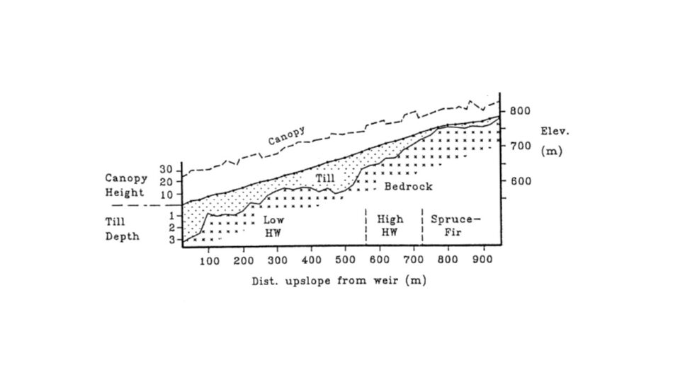
Six headwater catchments were originally chosen to provide paired small watersheds for comparative and experimental studies (see Introductory chapter for full description). These watersheds encompass a steep hill slope that exhibits characteristic soil and landscape features which influence biogeochemical and hydrological behavior . The watersheds can conveniently be sub-divided into three zones (Figure 8.1). At the highest elevations on and near the ridgeline, soils are thin, often bedrock limited and support a mix of conifer (spruce-fir) and low productivity hardwood forest. Below are steep slopes with somewhat deeper soils and mixed hardwood forest. In the lower watershed, slopes are less steep, soils and glacial deposits are much deeper and the forests are taller and more productive (Johnson et al. 2000). Soils on the watersheds are predominantly well-drained, and highly acid spodosols with well-developed surface organic horizons; see Chapter on soil formation (forthcoming) for detailed explanations of soils and soil-forming processes at HB.
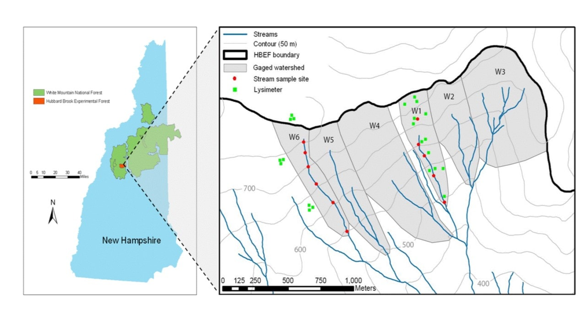
Long-term biogeochemical monitoring of water and element flux have been measured at the weir located at the base of each watershed. However, to increase the resolution of element sources and sinks, sampling programs have been established within selected watersheds (Figure 8.2) corresponding to the elevation zones noted above. Free-draining soil solutions are collected with a network of zero-tension lysimeters positioned beneath the Oa (8 cm depth), Bh (20cm), and B5 (>30cm) horizons. In addition, stream water is sampled monthly at stations located along the main channel of the streams draining W1, W5 and W6 (Figure 8.2). These samples are used to interpret the element behavior within the HB watersheds.
8.4 Watershed-scale Hydrochemistry
The most basic indicator of element behavior in watersheds is the concentration-discharge (C-D) relationship. How does the concentration of a solute change with increasing flow of water in the stream? At one extreme we could imagine that solute flux might remain constant with increasing water flow as the extra water simply dilutes a finite pool of the solute. In contrast, solute flux might increase linearly with water flow if increasing amounts of the solute are supplied to the stream; hence, concentrations would remain roughly constant with increasing water flow. It is even possible that solute concentrations could increase with higher water flow if the additional water was flushing chemicals from previously inaccessible pores in the soils or sediments. In fact, all three of these behaviors were observed for different nutrients in the early measurements at HB. Johnson et al. (1969) observed dilution of Si and Na with increasing flow, apparent chemostatic behavior (i.e. invariant concentration) for Mg and SO4, and increased Al concentration with increasing stream discharge (Figure 8.3). For NO3 and K the C-D relationships differed greatly between the growing season and the dormant season.
Concentration-discharge relationships for inorganic Al (left) and dissolved silica (right) in umol/L for two locations along the stream draining W6 (from Lawrence and Driscoll 1990).
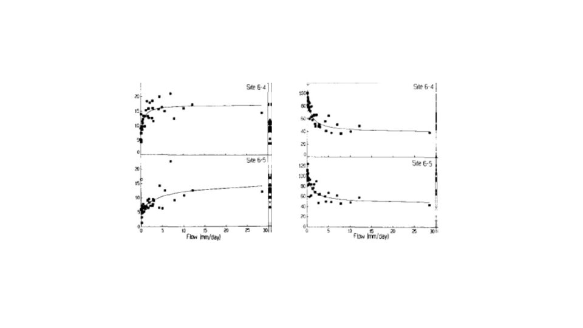
Johnson et al (1969) devised the simplest “working model” explaining such C-D relationships in the HB watersheds. The streamwater consists of a mixture of meteoric input (rain, snowmelt) and water stored in the soils and sediments. They assumed that when stream discharge is zero there remains a finite water storage pool and that stream discharge increases in proportion to the increase in the amount of water in the storage pool following meteoric input. In the case of Al, presumably the increasing Al concentration with increasing discharge results from the increased water storage flushing soil pores where this rock-derived, non-essential element accumulated in soluble form between large rain events.
Empirical observations using this model suggested that for some solutes, it may be more appropriate to regard surface soil solutions as the “input” because the fitting of empirical C-D relationships required much higher concentrations than observed for precipitation chemistry. Others have suggested three-component mixing models (e.g. atmospheric, soil, groundwater) to help accommodate observations of hysteresis loops in C-D relationships in which the change in concentration with increasing discharge is not the mirror image of that with decreasing discharge (Hooper et al. 1990). More recently, Godsey et al. (2009) noted the surprising, near-chemostatic behavior of most elements in most watersheds, i.e. solute concentrations only change slightly over several orders of magnitude of stream discharge. They suggested that this behavior may reflect decreasing porosity and average pore size with increasing depth in the soil or sediments in the watersheds. In effect, as water volume in the storage pool increases there is a rapid increase in the amount of contact between porewater and particle surfaces from which solutes are derived. Thus, physical hydrology may be regulating C-D relationships.
Monthly mean concentration of potassium in (a) stream-water in cutover W5 and reference W6, and B horizon soil solution in W6; and (b) W5 stream-water and soil solution collected from three depths (from Romanowicz et al. 1996).
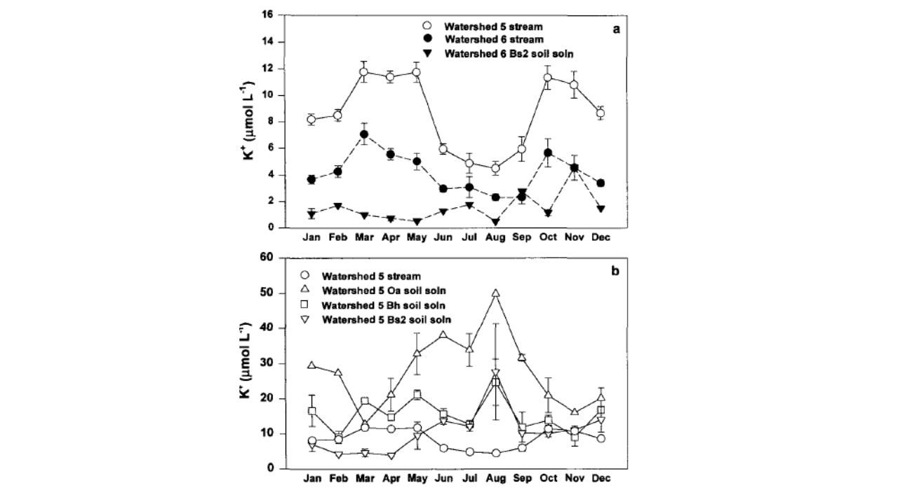
The behavior of K in the HB watersheds provides some insights into controls of element fluxes at the catchment scale. As noted, K is highly soluble and leachable and in high demand for uptake by the vegetation. Likens et al. (1994) attributed the observed summer decline in stream water K in W6 (Figure 8.4) in part to vegetation uptake by the deciduous forest, and an autumn peak in K concentration to rapid leaching from fallen leaf litter (Gosz et al. 1973, see below). Following whole-tree harvest of adjacent W5, K concentrations in the stream increased markedly and exhibited the same seasonal pattern (Figure 8.4). However, K concentrations in soil solutions in W5 (mobile water collected with zero-tension lysimeters; Figure 8.4) exhibited the opposite seasonal pattern, paradoxically increasing during the growing season (Romanowicz et al. 1996).
The explanation for this anomalous behavior invokes the dual-pore concept of soil water (Shaeffer et al. 1979): large macropores that drain under the force of gravity and tiny capillary micropores in which water is retained by adhesion to soil particles. We hypothesize that most plant uptake is from the micropores which would allow for the high K in free-draining soil solutions during the summer. Moreover, average K concentrations in stream water on both W5 and W6 greatly exceeded that in the deep soil solution during the high stream flow period associated with spring snowmelt (March to May; Figure 8.4). This pattern is consistent with the hypothesis that during high flow, deep soil flowpaths to the stream are short-circuited as lateral, near surface flowpaths with lower K concentrations (Figure 8.4) become more important sources of stream water; the rapid flow itself may contribute to the low K.
In sum, the watershed-scale behavior of solutes is controlled by a complex conjunction of climate, soils, biota and hydrology, with a particular emphasis on the last-named. One implication is that in terms of biogeochemical behavior, the greatest effects of climate change at HB may be associated with increasing precipitation rather than increasing air temperature (see Climate Change chapter).
8.5 Plant nutrient uptake, storage and resorption
Uptake of nutrients by plant roots and mycorrhizae is among the largest flux pathways in the forest and plays a key role in regulating element flow through the watershed. Plants require nutrients in proportion to their demand for growing new tissues; different plant tissues contain different nutrient concentrations (e.g., wood vs. leaf) and the proportions of various tissues in the plant change as the plants grow (i.e. allometry changes). For example, Whittaker et al. (1979) noted that although all macronutrients are at much lower concentrations in wood than in deciduous tissues of trees (e.g., leaves, fine roots), this difference is much more pronounced for N, P, K than for Ca and Mg. Vitousek et al. (1988) noted that analogous changes in the proportions of woody vs. deciduous tissues during forest development (i.e. more and more wood) results in changing C:N:P stoichiometry; both C:N and C:P in the forest increase with forest age but C:N increases faster than C:P.
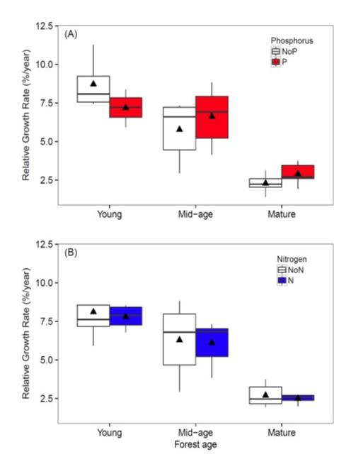
The implication of these stoichiometric considerations for forest nutrient limitation was realized by Rastetter et al. (2013) who evaluated nutrient limitation of vegetation regrowth following forest harvest or other large-scale disturbance at HB. The cycles of the limiting macronutrients, N and P, are strongly coupled in ecological systems. The uptake of both N and P is supplied almost entirely by recycling from detritus, and the N:P ratio in the detrital residue following disturbance is much lower than that of the recovering vegetation. As a result, N is strongly retained whereas P is released in excess from the decaying detritus and lost from rapidly cycling pools. Thus, in the initial stages of recovery N is most limiting to plant growth and “resynchronization” of the N and P cycle occurs gradually with forest succession. Results from an N-P factorial fertilization experiment in and around HB supported this concept, with N most limiting in young forests and P more limiting in older stands (Figure 8.5).
The nutrient content of plant litter, as well as the root nutrient uptake demand, depends upon the process of resorption in which nutrients are retracted from dying tissues and stored in perennial tissues like sapwood. The resorbed nutrients can then be used to grow new tissues later. Whittaker et al. (1979) observed that 7 of 11 nutrients they measured were resorbed from deciduous leaves of northern hardwood trees at HB. Subsequent studies demonstrated the magnitude of this flux pathway, differences among nutrients and species (Ryan and Bormann 1982), and some environmental controls of leaf resorption (Fahey et al. 1998; See et al. 2015). Typically P and N are the most tightly cycled nutrients and 50-80% of the P and N content of northern hardwood leaves is resorbed in an average year. This provides roughly one-third of the annual vegetation demand for tissue growth at HB (Ryan and Bormann 1982). Somewhat lower amounts of K and Mg are resorbed, with uncertainty for K owing to its high leachability from foliage. Notably, the important macronutrient, Ca, is not resorbed because it is insoluble in phloem sap which serves as the pathway of nutrient resorption from foliage to stem tissue. Thus, root uptake of Ca must be much greater relative to its abundance in the tree than for the other macronutrients.
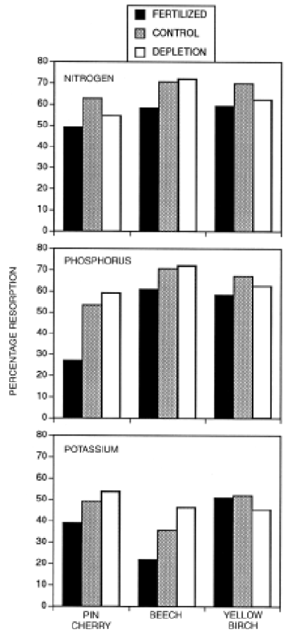
Resorption of leaf nutrients requires an energy expenditure, and it seems logical that in more fertile sites this nutrient conservation mechanism would be down regulated. However, the evidence for this hypothesis is mixed: although some fertilization experiments, as well as surveys along fertility gradients, support the hypothesis, meta-analyses have noted only weak associations between nutrient availability and resorption (Killingbeck 1996). Nevertheless, studies of northern hardwoods in and around HB indicate that N and P resorption decrease with increasing soil nutrients (Figure 8.6; Fahey et al 1998; See et al. 2015; Gonzalez et al, in review). One consequence of foliar nutrient resorption is the effect on the quality of plant litter and consequently microbial decomposition of litter (see Decomposition chapter).
Whittaker et al. (1979) noted that nutrient resorption from other dying plant tissues also occurs at HB; the transition from living sapwood to heartwood includes nutrient retraction as does the death of branches and bark tissue. Notably, most evidence discounts the significance of nutrient resorption from ephemeral fine roots and mycorrhizae, although Li et al. (2015) indicated that ectomycorrhial fungi probably recover N and P from dying roots of pine, presumably transporting them through the fungal hyphal network to living roots.
One final key observation from HB about nutrient resorption: the process seems to differ markedly among years. For example, Hughes and Fahey (1994) observed roughly two-fold variation in N resorption (35-70%) across three years in mature northern hardwood forest. The causes and consequences of interannual variation in nutrient resorption are unknown and deserve further study given the large magnitude of this flux pathway.
8.6 Decomposition and nutrient mineralization
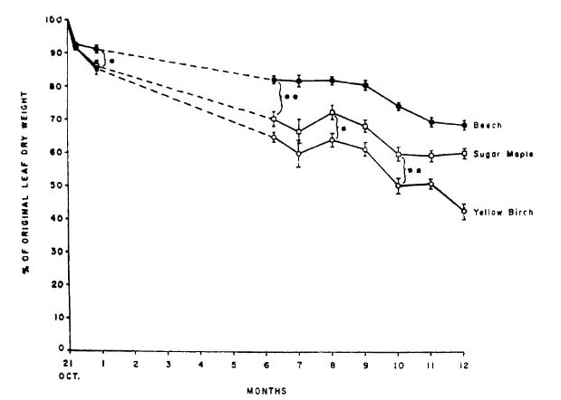
The availability of mineral nutrients for root uptake depends on their conversion from the organic forms in which they occur in tissues to inorganic forms. The release of nutrients during litter decomposition differs markedly among elements and tissues. At one extreme, K release from decaying leaves is very rapid and largely independent of the pattern of overall litter decay. In contrast, the mineralization of N and P is closely tied to the progression of organic matter decomposition and the microbially-mediated decay process (see Decomposition chapter). Classical theory suggests that the release pattern of N and P from decaying litter depends upon the ratio of carbon to nutrient (C:Nt) in the residue, with immobilization occurring at high C:Nt and mineralization at low C:Nt . Because C is lost from the residue as respiratory CO2, the C:Nt declines with decay and the switch from immobilization to mineralization is expected when the C:Nt in the residue is similar to that of the decomposers, the bacteria and fungi. In fact, litter decay studies at HB demonstrated that not only are N and P immobilized in decaying leaf litter of northern hardwoods, but these nutrients are transported in large quantity from soil into litter (Gosz et al. 1973), probably primarily by fungal hyphae. Note that after a year of decay the N and P content of leaf litter can nearly double (Figure 8.7). This N and P flux pathway is one of the largest in the hardwood forest (Li and Fahey 2015). By comparison, release of Ca from litter roughly follows that of C while both K and Mg are much more rapidly released (Gosz et al. 1973).
Soils in cold, acidic environments accumulate a discrete organic horizon (forest floor) overlying the mineral soil. At HB this forest floor ranges from about 5-10 cm depth (Figure 8.8) greatest in the spruce-fir forest at high elevation.
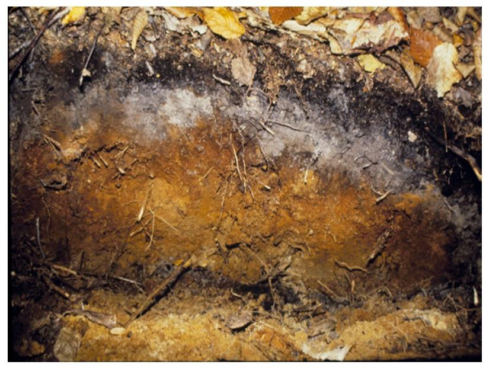
Apparently the decomposition of plant litter does not keep pace with its production (Olson 1963); the relatively discrete nature of the forest floor also reflects a lack of mixing of surface litter with mineral soil by soil invertebrates such as annelid earthworms which are uncommon at HB. The forest floor plays a crucial role in ecosystem nutrient dynamics as at least half of tree root uptake occurs there. Mycorrhizae are highly concentrated in the forest floor (e.g., 35-40% of fine root biomass resides there; Fahey and Hughes 1985). Moreover, the roots and mycorrhizae clearly play an important role in the accumulation of forest floor layers, as root turnover and exudation supply much of the organic matter. A positive feedback mechanism can be envisioned where root growth in the forest floor and organic matter accumulation there are mutually reinforcing, thereby resulting in forest floor development. The persistence of well-developed forest floor layers enhances soil permeability and protects soil from erosion, services that are lost when invasive earthworms eliminate these horizons (Bohlen et al. 2004). Finally, the forest floor plays a key role in soil profile development (see forthcoming Soil Chapter) and in leaching of nutrients through the soil profile, as explained next.
8.7 Leaching of Elements Through the Soil
As water flows through soil pores, solutes are added and removed from the soil solution by a variety of biotic and abiotic mechanisms, and the net effect is transport of elements through soil by leaching. Most solutes in the soil solution are in ionic forms, positively-charged cations (H+, Al3+, Ca2+, etc.) and negatively-charged anions (OH-, HCO3-, SO42-, NO3-). These ions are electrostatically attracted to particle surfaces and because most of these surfaces are negatively charged, the cations are most tightly held on what is termed the cation exchange complex (CEC) consisting of clays, oxides and organic particles (humus). Differences in the strength of attraction between the CEC and different cations depends on their chemical properties as represented by the lyotropic series of decreasing attraction: Al3+>H+>Ca2+>Mg2+>K+>NH4+>Na+. Thus, H+ will normally displace some of the adsorbed base cations from the CEC. In contrast, most soils possess limited anion exchange properties; hence, anions are potentially more mobile in soil than cations. On this basis the mobile anion concept of cation leaching from soil was devised (McColl and Cole 1968): leaching of cations from soil is regulated by processes supplying mobile anions to soil solution. The principal anions in soils include the strong mineral acid anions (SO42-, NO3-, Cl-), bicarbonate and carbonate (HCO3-, CO23-), and organic anions (mostly carboxyl, COO-). To understand the leaching process in HB soils we need to evaluate the sources of these anions and any processes that may limit their mobility.
In some forests the principal mobile anion is HCO3- generated by dissolution of respiratory CO2 and subsequent dissociation of carbonic acid, H2CO3 to H+ + HCO3-. The H+ will displace base cations like K+, Ca2+ from CEC and transport them through soil as neutral salts. Which cations are leached will depend on their abundance on the CEC and the lyotropic series. However, at HB soils and solutions are mostly too acidic for the weak carbonic acid to significantly dissociate so that bicarbonate leaching is minimal. The principal mobile anions in mineral soil at HB are SO42- and NO3-, and variation in base cation leaching is very strongly correlated with their abundance and mobility (Figure 8.9).
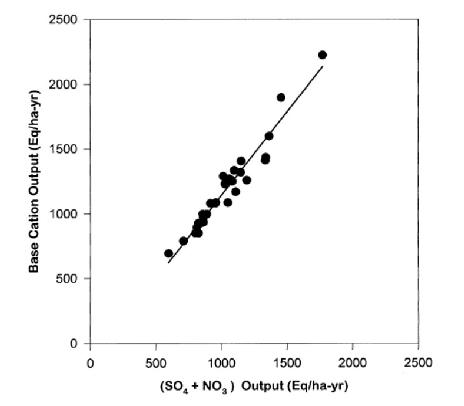
These mineral acid anions, NO3- and SO42-, are supplied to the soil solution both by atmospheric deposition (“acid rain”; Climate Change chapter) and by internal processes. Most of the SO4 is supplied by wet and dry deposition with a much smaller amount from weathering of S-bearing minerals in bedrock and glacial till (Likens et al. 2002). In addition to atmospheric deposition, NO3 is supplied to soil solution by the process of nitrification of NH4+ which is carried out by prokaryotic soil microbes (see Nitrogen Cycling chapter). Note that this is an acidifying process as two moles of H+ are generated for each mole of N nitrified.
The mobility of the acid anions is decreased by biotic and abiotic processes. High demand for N by plants and soil microbes can strongly limit NO3 mobility in soil; although S is also an essential nutrient, it is available in much greater amounts than its demand by organisms. Sulfate is retained in mineral soil primarily by adsorption to the Fe and Al oxides present in mineral soil, a process that is pH dependent. Thus, SO4 adsorption increased markedly at HB following forest harvest that acidified soil by greatly stimulating nitrification (Fuller 1987). Although nitrate is not significantly adsorbed in HB soils, it may be retained in surface organic horizons in part by an abiotic redox process involving iron (Davidson et al. 2002, Dittman et al. 2007).
A final source of anionic charge that contributes to cation leaching is a complex suite of soluble organic compounds. This dissolved organic carbon (DOC) is generated primarily by partial decomposition of dead organic matter, especially in the forest floor horizons (McDowell et al. 1998). Fulvic acid - the generic term for organic acids in soil solutions - consists of various large aliphatic and aromatic CHO groups containing many carboxyl groups (COOH), that dissociate to COO- and H+. The strength of these carboxylic acids - their tendency to dissociate - varies greatly but even at the relatively low pH of HB soils, lots of organic anion charge is found in soil solutions. In general, the supply of DOC to soil solution depends upon the soil organic matter (SOM) pool size and decomposition processes; higher DOC generation is expected with thicker forest floor and under seasonally warmer conditions (McDowell and Likens 1988). The mobility of DOC is controlled mostly by adsorption processes associated with humus, clay minerals and oxides (McDowell and Wood 1984). These processes are complex and beyond the scope of this chapter, but they will be more fully explored in the chapter on soil formation (forthcoming) because DOC plays a key role in podsolization. Suffice it to say that DOC retention in HB soil depends upon co-precipitation with Fe (Fuss et al. 2011), the increase in soil pH with depth, and soil water contact with particle surfaces in micropores. Transport of DOC through soil to streams is limited except where shallow flowpaths allow rapid transport from forest floor to stream water (Dittman et al. 2007).
The importance of DOC in soil nutrient leaching is also evident from the high proportion of N and P leaching associated with dissolved organic matter; under undisturbed conditions half or more of N and P leaching occurs in organic forms at HB (see Nitrogen Cycling chapter and Phosphorus chapter). Thus, besides being the source of mineral nutrients released by decomposition, the forest floor also serves as the source of leaching power in the form of soluble organic matter.
To further illustrate the process of soil leaching, and to introduce additional elemental interactions, we consider the particular case of calcium. This divalent cation is an essential macronutrient but it also plays a pivotal role as the most abundant base cation in most soils. As such, Ca exerts control over the pH of soils and soil solution; when Ca decreases so also does pH. Importantly, when Ca and pH are very low, toxic aluminum becomes very soluble; many of the effects of acid rain on ecosystem health stem from Ca depletion and Al toxicity (Driscoll et al. 1980; see Aluminum chapter [forthcoming]). At HB, long-term monitoring has demonstrated that soil Ca pools were seriously depleted in the 20th century as a result of increased leaching by acid deposition and removal by logging (Likens et al. 1996). The resulting low soil and surface water pH resulted in mobilization of Al with consequences for the health of forest and aquatic ecosystems. Despite marked reductions in acid loading since the late 20th century, recovery of soils and surface waters has been delayed by the slow re-supply of Ca from primary mineral weathering.
Additional insights into the mechanisms driving forest ecosystem element behavior were afforded by analysis of the coupling between two chemically mobile solutes, nitrate and potassium, in ecosystem solutions (soil water, streams) following various forest disturbances (clear cutting, ice storm etc.). Despite considerable variation in the coupling of nitrate and potassium flux across disturbances, solution types and years, an overall stoichiometric consistency exhibiting a molar ratio of 10:1 was detected (Fig. 13). But what mechanisms might account for residual variation in this coupling? Fakhraei et al. (2019) suggested that differences in the timing and magnitude of flushing of nitrate and potassium following large-sale disturbance were influenced primarily by: 1) rapid K flux from dead fine roots vs. delayed increase in nitrification; 2) K retention and subsequent release from the soil cation exchange complex; 3) greater plant demand for N than K relative to supply; and 4) additional involvement of sulfate mobilization in driving K leaching. Still, some mysteries remain. For example, a few years after whole-tree harvest of WS5, K+ and NO3- exhibited a large, coupled increase in leaching from surface organic horizons over four consecutive years. A mechanism accounting for this curious behavior has not been identified to date.
8.8 Nitrogen-Phosphorus Co-limitation of forest ecosystems
The assimilation of C by northern hardwood forests may commonly be co-limited by N and P (Vadeboncouer 2010), with the addition of both nutrients together stimulating production more than either element alone. Tree foliage in the HB and Bartlett forests contains N and P at about the mass ratio that indicates some degree of co-limitation (N:P=15 to 17; Figure 8.10), and the addition of N pushes the ratio into the P limitation range (20-25) and vice versa (Gonzales et al. 2023). The long history of pollutant N deposition in the eastern U.S. may have induced a “transactional” limitation of productivity by P (Vitousek et al. 2010) in many forests, including those in and around HB. The ability of the forest ecosystem to balance N and P limitation of C assimilation is illustrated by increased effort at P acquisition (i.e. phosphatase enzyme production) where soil N availability is high (Ratliff and Fisk 2016; Figure 8.11).
To test these ideas we initiated a broad scale study of Multiple Element Limitation in Northern Hardwood Ecosystems (MELNHE). Beginning in 2011 relatively low levels of N (30 kg/ha-yr) and P (10 kg/ha-yr) have been added in a full factorial design to thirteen forest stands that vary widely in age, composition and site quality. As noted above in the initial stages of recovery following large-scale disturbances, we expected N to be most limiting to plant growth and “resynchronization” of the N and P cycle would occur gradually with forest succession. Initial results after four years supported this concept, with N being most limiting in young forests and P more limiting in older stands (Figure 8.5). More recently, continued treatment in these forests indicated that co-limitation by N and P predominates in most of the stands, with significantly greater tree growth response to N+P than to either nutrient alone. This exciting result provides a strong basis for evaluating the mechanisms contributing to the maintenance of nutrient co-limitation, including foliar resorption, mycorrhizae and soil enzymes.
8.9 Synthesis
In this brief chapter we have touched on only a few of the innumerable element behaviors and interactions in the HB ecosystems. We now return to some of the original ideas raised by Whittaker et al. (1979) in their seminal study of element cycling and behavior at HB. Both geologic and biological factors exert primary control over element fluxes in the HB forest - i.e. biogeochemistry! We emphasize the particular importance of soil pores; their sizes and distributions apparently help to explain concentration-discharge relationships as well as patterns of K and DOC transport through the watershed. The formation of macropores and pipes in soil is mediated both biologically (e.g., root channels) and physically (e.g., freeze-thaw cycles) and deserves further study. We also note that both biotic and geologic processes are involved in the supply and mobility of the mobile anions that “drag” nutrient cations from soil; whereas NO3 mobility is regulated mostly by biotic uptake that of SO4 involves a geochemical adsorption process.
As hypothesized by Whittaker et al (1979) the biogeochemical behavior of the elements fundamentally depends upon their chemical properties and functions in the organisms. The lyotropic series of cation exchange is determined by ionic radius and charge density, while the differential leachability of K and Ca from plant tissues depends mostly on their function in the plant (for K, membrane transport vs. the role of Ca in cell wall structure). Differences among plant tissues in element concentrations also leads to shifting patterns of availability of different nutrients during stand development, with likely consequences for trait selection and evolutionary changes. Among the most notable adaptations to nutrient limitation is high nutrient-use efficiency (NUE), defined as the amount of C assimilated per unit nutrient uptake (Vitousek 1982). For N and P high NUE is associated especially with foliar resorption which appears to be a highly plastic process in northern hardwood forest, decreasing markedly with increased site fertility. Moreover, depleted soil Ca appears to be limiting forest production at HB (Battles et al. 2014), but the trees have no capacity to respond with increased NUE for Ca simply because Ca is insoluble in phloem sap.
A useful way to express the mobility of different elements in forest ecosystems is on the basis of their residence times, defined as the ratio of element stock in an ecosystem compartment to the annual input or output. At steady state Table 1. Steady state residence times (years) of macronutrients in forest floor (from Gosz et al. 1976) and aboveground biomass (adapted from Whittaker et al. 1979). Element Forest Floor Biomass Table 1. Steady state residence times (years) of macronutrients in forest floor (from Gosz et al. 1976) and aboveground biomass (adapted from Whittaker et al. 1979).
Element Forest Floor Biomass Calcium 3.9 8.8 Magnesium 2.7 5.1 Potassium 0.7 3.3 Phosphorus 12.8 8.3 Nitrogen 11.9 6.2 Carbon 8.0 24.3
the residence time would be roughly equal to the time that an average atom of an element remains within the compartment. Gosz et al. (1976) calculated the residence time of various elements in the forest floor at HB on the basis of measurements of forest floor stocks and annual inputs in litterfall, precipitation and net throughfall/stemflow flux. Similarly, Whittaker et al. (1979) calculated residence times for aboveground biomass using data on litterfall and canopy leaching flux. Not surprisingly residence time for K is the shortest and Mg is next for both forest floor and aboveground biomass (Table 1). Strong retention of N and P by microbes in the forest floor is reflected in their particularly long residence times. Notably, the residence time of base cations in biomass is much greater than in forest floor whereas the reverse is true for N and P. Why do you think this is the case?
The biogeochemical cycles of the various elements are interwoven in complex ways, and we have emphasized some of the prominent element interactions. Besides the co-dependence of the cycling of cations and anions in soils and
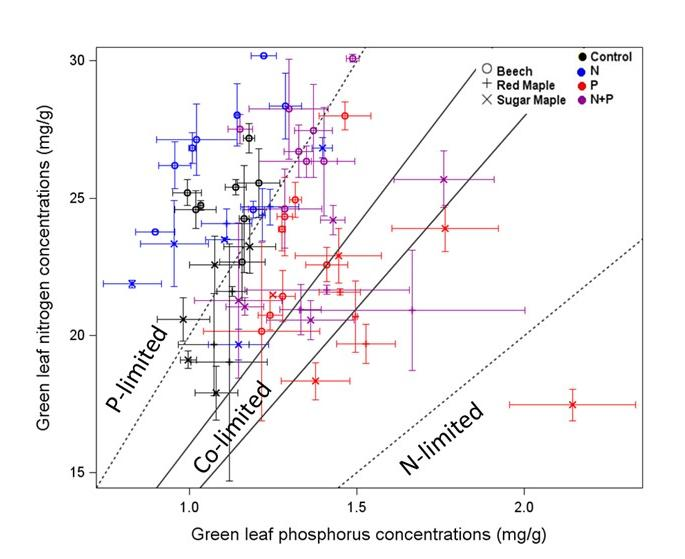
vegetation, perhaps the most important element interactions in the ecosystem involve the tight coupling among C, N, and P, a broadly applicable (global?) ecosystem pattern enshrined as so-called Redfield ratios (Redfield 1958). The assimilation of C by northern hardwood forests appears to be commonly co-limited by N and P (Vadeboncouer 2010), the addition of both nutrients often stimulating production more than either element alone. Tree foliage in the HB and Bartlett forests contains N and P at about the mass ratio that indicates some degree of co-limitation (N:P=15 to 17; Figure 8.10), and the addition of N pushes the ratio into the P limitation range (20-25) and vice versa (Gonzalez et al. 2023). The long history of pollutant N deposition in the eastern U.S. has probably induced a “transactional” limitation of productivity by P (Vitousek et al. 2010) in many forests, including those in and around HB. The ability of the forest ecosystem to balance N and P limitation of C assimilation is illustrated by increased effort at P acquisition (i.e. phosphatase enzyme production) where soil N availability is high (Ratliff and Fisk 2016; Figure 8.11).
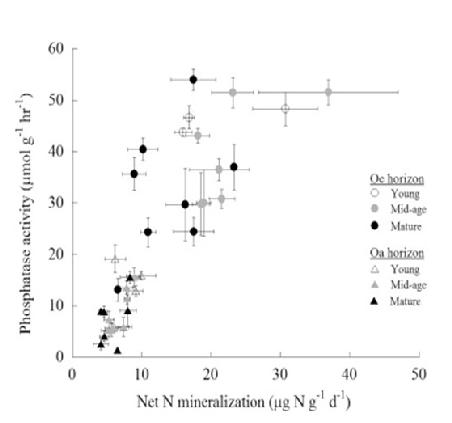
Among the most intriguing and complex biogeochemical interactions are those involving oxidation-reduction (redox) processes. In aerobic (O2 rich) situations, O2 serves as the “dump” for respiratory electron transport chains, but when oxygen is scarce in soils and sediments, alternative electron sinks include the reduction of oxidized forms of Fe, S and N. The mostly well drained soils at HB only rarely reach O2 levels at which such biochemical reduction processes would be expected. However, some evidence indicates that reduction of NO3 to gaseous forms by denitrification may be a qualitatively significant N flux pathway at HB (see Nitrogen Cycling chapter).
The redox situation with Fe is also intriguing. Iron is a major rock-forming element and when weathered from soil minerals, can occur in either oxidized (ferric, Fe+3) or reduced (ferrous Fe2+) form. Despite the predominance of well-aerated (O2 rich) soils at HB, a surprisingly high proportion of Fe in soil and soil solutions is found in the reduced form (10-60%, Fuss et al. 2011). Most of the soluble ferrous iron occurs as metal-organic matter complexes which apparently are somehow protected from oxidation. The reduction of ferric iron may occur in O2 depleted rhizosphere soil where lots of labile organic matter resides. The transport of these organic complexes plays a key role in soil podsolization, as Fe and DOC co-precipitate in B5 horizons. Thus, exudation of organic matter and consumption of O2 by roots, interacts with Fe weathering from soil minerals and helps to drive soil formation at HB.
In conclusion, in this chapter we have only scratched the surface regarding the behavior and interactions of elements in forest biogeochemical cycles. We trust that this overview has stimulated the reader’s interest in the fascinating study of nutrient cycling.
Overall response of the change in potassium relative to nitrate in solutions following disturbances of different watersheds at the Hubbard Brook Experimental Forest.
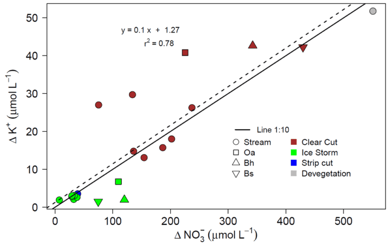
8.10 Questions for Further Study.
- Can the decrease in soil porosity, permeability and pore widths with increasing depth explain patterns of element concentration-discharge relationship in HB watersheds? What role does biological uptake play in controlling C-D relationships?
- How do feedbacks and interactions among soils, climate and vegetation communities at the hardwood-conifer boundary influence nutrient cycles? What are the implications for ecosystem response to climate change?
- Exactly how does resorption of N and P work, i.e. what is the biochemical mechanism and energetic cost of resorption, including that associated with sapwood, branches and bark?
- What causes the high annual variation in foliar resorption?
- What controls the formation and stoichiometry of DOC, DON, and DOP? Is there differential transport of these components that could de-couple their cycles to some degree?
8.11 References
Battles, J. J., Fahey, T. J., Driscoll, C. T., Jr., Blum, J. D., & Johnson, C. E. (2014). Restoring soil calcium reverses forest decline. Environmental Science & Technology Letters, 1(1), 15–19. https://doi.org/10.1021/ez400033d
Bohlen, P. J., Scheu, S., Hale, C. M., McLean, M. A., Migge, S., Groffman, P. M., & Parkinson, D. (2004). Non-native invasive earthworms as agents of change in northern temperate forests. Frontiers in Ecology and the Environment, 2(8), 427–435. https://doi.org/10.1890/1540-9295(2004)002[0427:NIEAAO]2.0.CO;2
Bormann, F. H., & Likens, G. E. (1967). Nutrient cycling. Science, 155(3761), 424–429. https://doi.org/10.1126/science.155.3761.424
Bormann, F. H., Likens, G. E., & Melillo, J. M. (1977). Nitrogen budget for an aggrading northern hardwood forest ecosystem. Science, 196(4293), 981–983. https://doi.org/10.1126/science.196.4293.981
Davidson, E. A., Chorover, J., & Dail, D. B. (2003). A mechanism of abiotic immobilization of nitrate in forest ecosystems: The ferrous wheel hypothesis. Global Change Biology, 9(2), 228–236. https://doi.org/10.1046/j.1365-2486.2003.00592.x
Dittman, J. A., Driscoll, C. T., Groffman, P. M., & Fahey, T. J. (2007). Dynamics of nitrogen and dissolved organic carbon at the Hubbard Brook Experimental Forest. Ecology, 88(5), 1153–1166. https://doi.org/10.1890/06-0834
Driscoll, C. T., Baker, J. P., Bisogni, J. J., & Schofield, C. L. (1980). Effect of aluminium speciation on fish in dilute acidified waters. Nature, 284(5752), 161–164. https://doi.org/10.1038/284161a0
Elser, J. J., Sterner, R. W., Gorokhova, E. A., Fagan, W. F., Markow, T. A., Cotner, J. B., Harrison, J. F., Hobbie, S. E., Odell, G. M., & Weider, L. W. (2000). Biological stoichiometry from genes to ecosystems. Ecology Letters, 3(6), 540–550. https://doi.org/10.1046/j.1461-0248.2000.00185.x
Fahey, T. J., & Hughes, J. W. (1994). Fine root dynamics in a northern hardwood forest ecosystem, Hubbard Brook Experimental Forest, NH. Journal of Ecology, 82, 533–548. https://doi.org/10.2307/2261262
Fahey, T. J., Battles, J. J., & Wilson, G. F. (1998). Responses of early successional northern hardwood forests to changes in nutrient availability. Ecological Monographs, 68(2), 183–212. https://doi.org/10.1890/0012-9615(1998)068[0183:ROESNH]2.0.CO;2
Fakhraei, H., Fahey, T. J., & Driscoll, C. T. (2020). The biogeochemical response of nitrate and potassium to landscape disturbance in watersheds of the Hubbard Brook Experimental Forest, New Hampshire, USA. In Forest Water Quality. https://doi.org/10.1007/978-3-030-26086-6_22
Fuss, C. B., Driscoll, C. T., Johnson, C. E., Petras, R. J., & Fahey, T. J. (2011). Dynamics of oxidized and reduced iron in a northern hardwood forest. Biogeochemistry, 104, 103–119. https://doi.org/10.1007/s10533-010-9490-y
Godsey, S. E., Kirchner, J. W., & Clow, D. W. (2009). Concentration–discharge relationships reflect chemostatic characteristics of U.S. catchments. Hydrological Processes, 23(13), 1844–1864. https://doi.org/10.1002/hyp.7315
Gonzales, K. E., Yanai, R. D., Fahey, T. J., & Fisk, M. C. (2023). Evidence for P limitation in eight northern hardwood stands. Forest Ecology and Management, 529, 120696. https://doi.org/10.1016/j.foreco.2022.120696
Gosz, J. R., Likens, G. E., & Bormann, F. H. (1973). Nutrient release from decomposing litter. Ecological Monographs, 43, 173–191. https://doi.org/10.2307/1942196
Hooper, R. P., Christophersen, N., & Peters, N. E. (1990). Modelling streamwater chemistry as a mixture of soilwater end-members. Journal of Hydrology, 116, 321–343. https://doi.org/10.1016/0022-1694(90)90131-G
Hughes, J. W., & Fahey, T. J. (1994). Litterfall dynamics and ecosystem recovery during forest development. Forest Ecology and Management, 63, 181–198. https://doi.org/10.1016/0378-1127(94)90108-2
Johnson, C. E., Driscoll, C. T., Siccama, T. G., & Likens, G. E. (2000). Element fluxes and landscape position. Ecosystems, 3, 159–184. https://doi.org/10.1007/s100210000015
Johnson, N. M., Likens, G. E., Bormann, F. H., Fisher, D. W., & Pierce, R. S. (1969). A working model for stream water chemistry. Water Resources Research, 5(6), 1353–1363. https://doi.org/10.1029/WR005i006p01353
Killingbeck, K. T. (1996). Nutrients in senesced leaves. Ecology, 77(6), 1716–1727. https://doi.org/10.2307/2265778
Lawrence, G. B., & Driscoll, C. T. (1990). Longitudinal patterns in stream chemistry. Journal of Hydrology, 116, 147–165. https://doi.org/10.1016/0022-1694(90)90121-9
Li, A., Fahey, T. J., Pawlowska, T. E., Fisk, M. C., & Burtis, J. (2015). Fine root decomposition and fungal communities. Soil Biology & Biochemistry, 83, 76–83. https://doi.org/10.1016/j.soilbio.2015.01.011
Likens, G. E. (2013). Biogeochemistry of a forested ecosystem. Springer.
Likens, G. E., Bormann, F. H., Johnson, N. M., & Pierce, R. S. (1967). Element budgets. Ecology, 48, 772–785. https://doi.org/10.2307/1933736
Likens, G. E., Bormann, F. H., Johnson, N. M., Fisher, D. W., & Pierce, R. S. (1970). Effects of forest cutting. Ecological Monographs, 40, 23–47. https://doi.org/10.2307/1942440
Likens, G. E., Driscoll, C. T., & Buso, D. C. (1996). Long-term effects of acid rain. Science, 272, 244–246. https://doi.org/10.1126/science.272.5259.244
McDowell, W. H., & Likens, G. E. (1988). Dissolved organic carbon in Hubbard Brook. Ecological Monographs, 58, 177–195. https://doi.org/10.2307/2937024
Olson, J. S. (1963). Energy storage and ecosystem balance. Ecology, 44, 322–331. https://doi.org/10.2307/1932179
Rastetter, E. B., et al. (2013). Recovery from disturbance requires resynchronization. Ecological Applications, 23, 621–642. https://doi.org/10.1890/12-0686.1
Ratliff, T. J., & Fisk, M. C. (2016). Phosphatase activity and nutrient availability. Soil Biology & Biochemistry, 94, 61–69. https://doi.org/10.1016/j.soilbio.2015.11.018
Redfield, A. C. (1958). Biological control of chemical factors. American Scientist, 46, 205–221.
Romanowicz, R. B., et al. (1996). Changes in potassium cycling. Soil Science Society of America Journal, 60, 1664–1674. https://doi.org/10.2136/sssaj1996.03615995006000060016x
Ryan, D. F., & Bormann, F. H. (1982). Nutrient resorption. BioScience, 32, 29–32. https://doi.org/10.2307/1308560
See, C. R., et al. (2015). Soil nitrogen affects phosphorus recycling. Ecology, 96, 2488–2498. https://doi.org/10.1890/14-2068.1
Shaffer, K. A., Fritton, D. D., & Baker, D. E. (1979). Drainage water sampling. Journal of Environmental Quality, 8, 241–246. https://doi.org/10.2134/jeq1979.00472425000800020020x
Vadeboncoeur, M. A. (2010). Meta-analysis of fertilization experiments. Canadian Journal of Forest Research, 40, 1766–1780. https://doi.org/10.1139/X10-127
Vitousek, P. M. (1982). Nutrient cycling and efficiency. The American Naturalist, 119, 553–572. https://doi.org/10.1086/283931
Vitousek, P. M., Fahey, T., Johnson, D. W., & Swift, M. J. (1988). Element interactions in forest ecosystems. Biogeochemistry, 5, 7–34. https://doi.org/10.1007/BF02180318
Vitousek, P. M., Porder, S., Houlton, B. Z., & Chadwick, O. A. (2010). Terrestrial phosphorus limitation. Ecological Applications, 20, 5–15. https://doi.org/10.1890/08-0127.1
Whittaker, R. H., Likens, G. E., Bormann, F. H., Easton, J. S., & Siccama, T. G. (1979). Forest nutrient cycling. Ecology, 60, 203–220. https://doi.org/10.2307/1936471